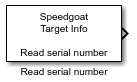

Read serial number
Read serial number
Library
Simulink Real-Time - Speedgoat/Utilities

Description
This block reads the serial number of the target machine.
The block inherits the sample time. It only gets executed once at model
start.
Supported Target Machines
This block supports all Speedgoat real-time target machines.
Ports
Outputs
-
The Read serial number block has one output port which represents the
serial number in decimal.